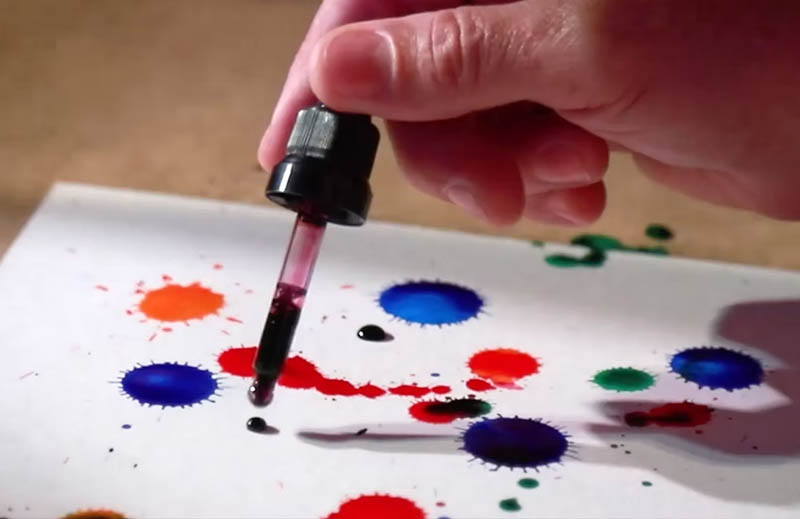
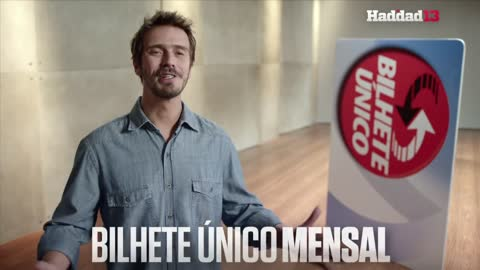
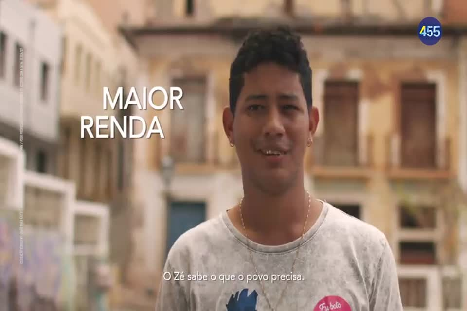
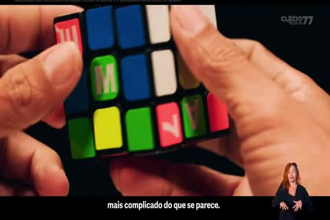

TCHELO NOGUEIRA
|
DIREÇÃO CRIATIVA E CONCEITO
|
REDATOR E DIRETOR DE ARTE
Sobre
|
LinkedIn
|
Contato
|
PT
/
EN
Portfólio
Currículo
Criatividade além da publicidade
Propaganda política
CRIATIVIDADE ALÉM DA PUBLICIDADE
CURTA-METRAGEM
Um Prato que se Come
direção | roteiro | montagem | trilha sonora | motion
SÉRIES DE ANIMAÇÃO
Magnífico + Bad Trip
direção | roteiro | montagem | trilha sonora | motion

EXPERIÊNCIAS ARTÍSTICAS CORPORATIVAS
Roche + Itaú + Porto Seguro
conceito | cultura | desenvolvimento de pessoas
TCHELO ARTISTA VISUAL
Objetos + Instalações
arte contemporânea | conceitual | exposições
PROPAGANDA POLÍTICA

PREFEITO HADDAD
2012

SENADOR ZÉ REINALDO
2018

GOVERNADOR CLÉCIO
2022
PREFEITO JARDEL
2024